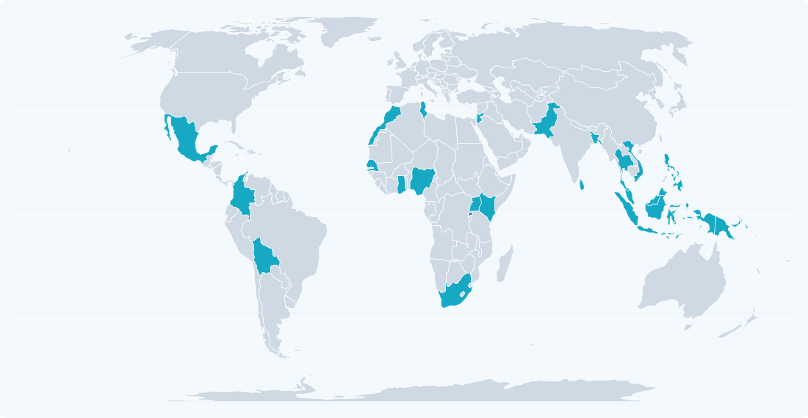

Document Collection & Screening
Official legislative texts, decrees, regulations, and policy documents.
▤Government and regulatory sources
Our methodology combines systematic document screening, structured codebook analysis, and a four-level depth rubric to evaluate AI health policies across countries and regulatory domains.
Official legislative texts, decrees, regulations, and policy documents.
Each document is tagged across format, stage, and policy type.
Content is evaluated using a four-level depth rubric.
Documents are annotated and made searchable for multi-country comparison.
Prototype links and excerpts are illustrative. Production content should be verified against official documents.
START EXPLORING
MODULE B · INTERACTIVE MAP
Explore the status of AI governance, regulation, and policy across countries, with a focus on low- and middle-income countries.
World map with country boundaries from Natural Earth. Tracked demonstration countries are highlighted. Select Rwanda to open its country workspace.

Explore the sample assessment and document repository for Rwanda.
◷ Last updated: 24 October 2026
14
Manufacturers shall document the intended use, risk classification, and clinical performance of software presented for authorization as a medical device.
Validation of representative local clinical trials is required prior to market authorization. The evidence submitted should reflect the intended patient population and clinical setting.
The authority may request additional evidence when the available study population does not sufficiently represent the proposed context of use.
The applicant should provide the study protocol, analytical plan, summary results, limitations, and documentation of material deviations.
ILLUSTRATIVE PROTOTYPE PAGE · NOT AN OFFICIAL DOCUMENT